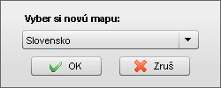
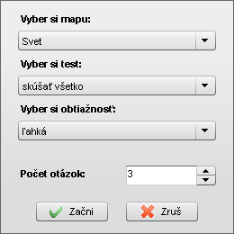

Hlavné okno programu
Po otvorení Editora máp je hore zobrazená hlavná lišta programu, pomocou ktorej je možné vytvoriť/otvoriť/uložiť mapu, prípadne vybrať si niektorú z aktivít. Hlavné okno programu je možné rozmerovo prispôsobiť pracovnej ploche.
tlačidlá na prácu so súborom
Práca so súborom
Mapy sa na disk ukladajú v súboroch s koncovkou .MEF. Po inštalácii Editora máp sa súbory s touto koncovkou zobrazujú s ikonou editora . Pri pokuse o otvorenie .MEF súboru v operačnom systéme sa automaticky otvorí editor máp a mapa sa načíta. V editore môže byť otvorená len jedna mapa, preto pokiaľ už je nejaká mapa otvorená, jej obsah sa stratí a načíta sa len nová mapa. V názve okna editora sa zobrazuje práve otvorený súbor a názov mapy.

výberové okno novej mapy
Na prácu so súborom slúžia tlačidlá Mapa na hlavnej lište:
- Nová - po kliknutí sa otvorí okno s výberom mapy, s ktorou chcete ďalej pracovať. Nová mapa má preddefinovanú viditeľnosť a farby objektov, viditeľnosť a texty značiek. Tieto vlastnosti mapy môžete meniť a zmeny si uložiť do súboru.
- Otvor - otvorí sa systémové okno na výber mapového .MEF súboru z disku počítača. Mapu je možné v editore otvoriť aj priamym otvorením .MEF súboru v operačnom systéme.
- Ulož - kliknutím uložíte do súboru momentálny stav mapy. Pokiaľ mapa ešte nebola uložená (bola vytvorená ako Nová), automaticky sa ponúkne možnosť Ulož ako.
- Ulož ako - otvorí sa systémové okno na výber zložky a názvu súboru, do ktorého sa má uložiť momentálny stav mapy. Pokiaľ mapa ešte nebola uložená (je vytvorená ako Nová), automaticky sa ponúkne zložka Moje dokumenty a názov súboru zodpovedajúci mape.
Pokiaľ je v editore otvorená mapa, na ktorej boli vykonané zmeny a tieto neboli uložené do súboru, pri pokuse o vytvorenie novej mapy, alebo načítanie mapy zo súboru sa objaví varovné okno.
Po vytvorení novej alebo otvorení mapy sa v editore zobrazí Okno mapy s vlastnou lištou nástrojov.
tlačidlá na spustenie aktivít
Aktivity
Editor máp vo verzii 2.0 obsahuje tri aktivity na precvičenie si zemepisných vedomostí. Aktivity je možné spúšťať bez ohľadu ma práve editovanú mapu. Počas aktivity je editovaná mapa skrytá, po ukončení aktivity je možné pokračovať v jej editovaní. Aktivity sa spúšťajú tlačidlami Aktivity na hlavnej lište:
- Vyskúšaj sa! - táto aktivita testuje rozoznávanie rôznych typov objektov na pozadí slepej mapy. Program v každej otázke vykreslí niekoľko objektov (napr. 5 rôznych riek) so značkami bez popisiek. Úlohou je kliknúť na značku správneho objektu. Po kliknutí sa ku zvolenej značke zobrazí popiska (názov objektu). Ak bola odpoveď nesprávna, zároveň sa doplní popiska ku značke správnej odpovede. Správna a nesprávna odpoveď sú navzájom farebne odlíšené.
- Traf sa! - táto aktivita je zameraná na správny odhad polohy bodových objektov (napr. miest) na pozadí slepej mapy. Úlohou je kliknúť čo najpresnejšie do mapy na miesto, kde sa má daný objekt nachádzať. Po kliknutí program zabodne červenú vlajočku na označené miesto a zelenú vlajočku na správne miesto. Zároveň oboduje presnosť zásahu v rozmedzí 0-100 bodov.
- Poskladaj! - táto aktivita je zameraná na správne určenie polohy plošných objektov (napr. štátov). Keďže predchádzajúce objekty z mapy nemiznú, pri dostatočnom počte otázok sa postupne vyskladá celá mapa. Do testu nie sú zahrnuté plošne veľmi malé objekty. V každej otázke sa uprostred slepej mapy zobrazí nový objekt vykreslený žltou farbou. Objekt je potrebné myšou potiahnuť čo najpresnejšie na jeho správne miesto. Po uvoľnení tlačidlá myši sa objekt uloží na svoje správne miesto. Pokiaľ bola poloha určená dostatočne presne, objekt sa vykreslí zelenou, pokiaľ nie, červenou farbou. Ostatne uložený objekt je vždy vykreslený výraznejšou farbou, aby si bolo možné skontrolovať svoju odpoveď.

okno výberu parametrov aktivity
Po kliknutí na tlačidlo niektorej aktivity sa zobrazí okno s výberom parametrov.
Každá z aktivít má v programe zadefinovaných niekoľko druhov testov pre niektoré alebo všetky mapy. Pre každý test je špecifický typ objektov, obsah podkladovej slepej mapy, obtiažnosť a počet otázok.
- Vyber si mapu - ponúkne zoznam máp, ktoré je možné v danej aktivite použiť. Po zmene mapy sa upravia možnosti výberu v ďalších parametroch.
- Vyber si test - pre danú aktivitu a daný štát môže existovať viac typov testov, ktoré sa líšia typom objektov alebo podkladovou mapou. Po zmene sa upravia možnosti výberu v ďalších parametroch.
- Vyber si obtiažnosť - všetky objekty v editore majú preddefinovanú svoju obtiažnosť. Do testu budú zahrnuté len objekty s vybranou alebo nižšou obtiažnosťou. Po zmene obtiažnosti sa upraví maximálna možná hodnota počtu otázok.
- Počet otázok - je možné si zvoliť počet otázok v danej aktivite od 1 až po maximálny počet objektov, ktoré zodpovedajú zvolenej mape, testu a obtiažnosti.
Po kliknutí na Začni sa spustí aktivita. Otázky sa striedajú náhodne a v jednom teste sa nikdy neopakujú.
V ľavom hornom rohu je zobrazená tabuľka s aktuálnym skóre (počet správnych/presných odpovedí, počet nesprávnych/nepresných odpovedí, alebo celkový počet bodov) a uplynutým časom. Po skončení testu sa test vyhodnotí celkovým časom a percentuálnou úspešnosťou.